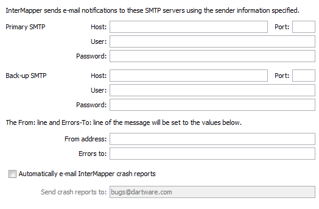

E-Mail Preferences
Use this panel to enter the information required to send e-mail notifications.

Configuration for sending e-mail notifications.
Setting E-mail Preferences
- Primary SMTP - Enter the Host name. If your SMTP server requires authentication,
enter a User, Password, and Port for the primary SMTP host. Port 25 is typically
used for outgoing E-mail servers.
- Back-up SMTP - Enter the Host name. If your SMTP server requires authentication,
enter a User, Password, and Port for the back-up SMTP host. If unsuccessful
sending through the primary host, InterMapper attempts to deliver e-mail messages
through the Back-up host.
Notes: InterMapper supports the PLAIN and CRAM-MD5 authentication
commands. You can use different E-mail accounts and passwords for the primary
and back-up SMTP servers.
- From address - Enter the E-mail address you want to appear as the From:
line of the message.
- Errors to - Enter the address you want to uses in the Errors-To: line
of the message. Bounce messages are returned to this address.
- Automatically e-mail InterMapper
bug reports - Check this box to allow InterMapper to send reports of errors and
bugs to the staff at Help/Systems automatically.
- Send bug reports to - Enter the E-mail address you want to use when sending bug reports.